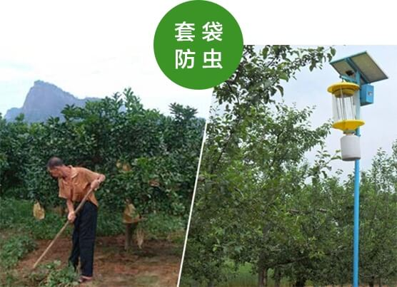

产品溯源

有机认证：臻果源通过国家有机食品认证

优质栽培：白水特有土壤栽培，富含有机质；海拔1100米，紫外线强烈；每棵果树3-4米株距，光照充足；

人工施肥：严把绿色有机食品关，种植全程只施用有机肥，让自然滋养自然；
套袋防虫：挂果后立即套袋，加上太阳能荧光灯物理除虫，种植全程无农药，保证零农残。
精选采摘：手工甄选高品质苹果，限时采摘装箱。
冷链保鲜：万吨冷库保鲜，全程冷链运输，历经长途跋涉，品质依然新鲜。
热忱欢迎各级领导及社会各界人士莅临参观、监督指导。